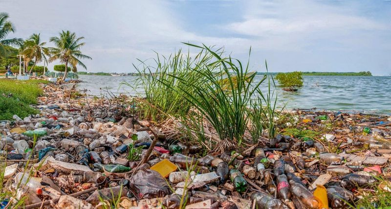

La contaminación del suelo supone la alteración de la superficie terrestre con sustancias químicas que resultan perjudiciales para la vida en distinta medida, poniendo en peligro los ecosistemas y también nuestra salud. Esta alteración de la calidad de la tierra puede obedecer a muy diferentes causas y, del mismo modo, sus variadas consecuencias provocan serios problemas de salubridad que afectan gravemente a la flora, fauna y a la salud humana. Lo hacen, por ejemplo, a través de la agricultura o afectando al equilibrio del ecosistema, polucionando el agua potable o el agua de riego, ya sea por entrar en contacto con estos lugares o por el simple hecho de que proceda de ellos. Lamentablemente, no siempre puede solucionarse el problema, y en ocasiones solo se recupera parcialmente, con la consiguiente degradación del área.
La contaminación del suelo o la tierra es un problema a nivel global, pues aunque haya zonas más dañadas el agua que circula por los suelos contaminados va a parar a otras partes del mundo. Los suelos contaminados incluyen agua contaminada y esto produce suelos infértiles, sequías, aguas no aptas para el uso y más problemas. Los motivos de esta contaminación son básicamente las actividades humanas. Como cada día empeora más la situación del medio ambiente y peligra planeta, es mejor que busquemos formas de frenar estos daños y prevenir su empeoramiento.Por ello, en EcologíaVerde te explicamos cómo evitar la contaminación del suelo y cuáles son las consecuencias de este problema ambiental, es decir las razones por las que hay que evitar que empeore y ponerle solución, así como las principales causas que son puntos en los que hay que incidir para solucionar este tipo de contaminación.
